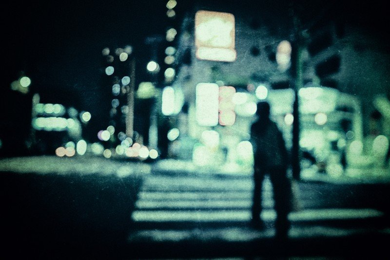

誰かに呼ばれた気がした
それはまだ眠りの中にいたころ
「ねえ。ねえ」
キミはそれしか言わなかった
かすかに目を開けたときには
もう誰もいなかった
誰かに呼ばれた気がした
それは懸命に夢へ向かっていたじだい
「がんばれ。がんばれ」
キミはそれだけ口にした
一瞬顔を振り向いたときには
知らない誰かから声援をもらっていた
誰かに呼ばれた気がした
それはみんなから喝采を浴びていたうたげ
「すごい。すごい」
キミはそうして拍手した
少しだけ声が聴こえたときには
すでに誰もが取り囲んでいた
どうしようもないボクを
どうして呼びにきてくれたの
なんでもないボクを
どうして応援してくれたの
しがないボクを
どうして称えてくれたの
誰かを呼んだ気がした
それは一人ぼっちになったいま
「ここだよ。ここにいるよ」
キミはボクに気づいていなかった
ボクがキミに気がつけなかったみたいに
誰かが 呼んでいる
誰かを 呼んでいる
目に見えない キミの顔
耳に届かない ボクの声
いつか きっと
いつか かならず
気づくよ キミを
気づいておくれ ボクに